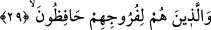
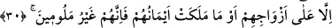

Bu son âyet, ara cümledir. Bir kimse itâat ve gayrette ne kadar ileri giderse gitsin,
Allah Teâlâ’nın azâbından emin olmaması, aksine korku ve ümid arasında yaşaması
gerektiğini bildirir. Zira hiç kimse âkıbetinin ne olacağını bilemez.
Kâşânî şöyle der: “Rablerinin azâbından korkanlar”. Yâni seyr u sülûke yeni
başlayıp da kalp nûru ile nefs makamından geçip ileri doğru giden; o makamda
durmayan korku ehli. Veya Kalp makamında mahrûmiyet ve hicap (perdelenme)
azâbından ya da Müşâhede makamında telvinden korkan sâlikler. Çünkü bir kalıntı
kaldığı müddetçe perdelenmekten emin olunamaz. Tıpkı Cenâb-ı Hakk’ın “Rablerinin
azâbına karşı emin olunamaz” buyurduğu gibi.
Burada bahsedilen “azâb”ın bir çeşidi de insanın kendini beğenmesidir. Çünkü bu,
insanı helâk eden ve hicâb ateşiyle ıkâb cehennemine düşüren illetlerdendir. Allah
Teâlâ’dan âfiyet dileriz.
29. Irzlarını koruyanlar
“Ferc”: Kadın ile erkeğin cinsiyet uzuvları; yâni ön kısımları edeben ferc kelimesiyle
ifâde edilmiştir. “İnsanın edebi zehebinden daha hayırlıdır.” “li furûcihim” deki harf-i
cerr, “hâfizûn” kelimesine bağlıdır. İşte bu kimseler edep yerlerini zinâdan korur ve
haram kimselere dokunmaz, gâyet iffetli davranırlar. Çünkü edep yerinin korunması,
“iffetli olmak”tan kinâyedir.
30. Ancak eşlerine ve câriyelerine karşı müstesnâ; çünkü onlar kınanmazlar;
Âyette yer alan “alâ” harf-i cerri, nahv kitaplarında ifâde edildiği üzere “min”
anlamınadır.
“Zevceleri”, nikâhlı hanımları; “veya ellerinin sâhip oldukları”, hayz ve nifastan
temizlenmiş, istibrâ müddetlerindeki temiz, helâl vakitlerinde câriyeleri.
Câriyelerden bahsedilirken, cansız varlıklar için kullanılan “mâ” harfi kullanılmıştır.
Bunun sebebi, ya köle oldukları için akılsız varlıklar yerine konmaları veya eksiklik
göstergesi unûset/dişiliğe sâhip olmalarıdır.
“Sağ elin mâlik olması” şeklindeki bir ifâdenin getirilmesi, burada edep yerlerini
koruyanlardan kasdın erkekler olduğunu gösteriyor. Her ne kadar korunma kadınlar için
de gerekli ise ki onlar için daha fazla gereklidir. Kadın efendiler, her ne kadar erkek
köleleri bulunsa da onlara karşı ırzlarını korumaları lâzımdır. Mesele kadın efendilerin
ırzlarını korumaları olunca, sâhip oldukları kölelerin kölelikleri değil erkek oluşları